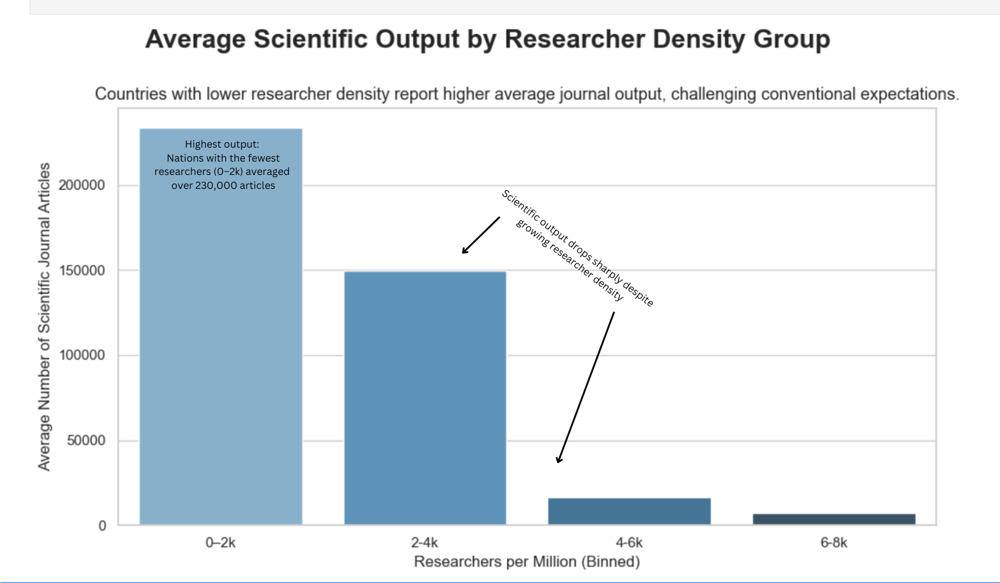
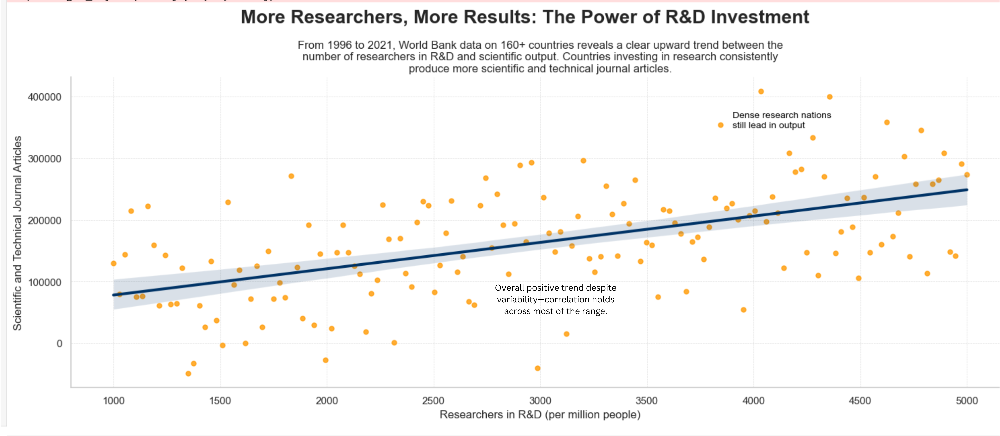

Proposition: Scientific Output Drops as Researcher Density Increases
FOR the Proposition

Design Decisions and Rationale:
-
Evenly Binned Researcher Categories
Score: +2 (fully earnest)
I divided researcher density into equal-width intervals of 2,000 researchers per million (0–2k, 2–4k, etc.) using pd.cut. This binning approach guarantees consistent spacing and emphasizes trends within organized groupings instead of sometimes deceptive quantiles. Preserving consistent width across categories helps it to avoid favoring any particular group. Reviewing distribution spread helped me to confirm bin uniformity and prevent data clustering in any one group. -
Advanced Data Transformations
Score: +2 (fully earnest)
I applied several layers of data transformation beyond basic binning. To eliminate biases from limited data, I first filtered the dataset to keep only nations with non-missing values for both researcher density and journal production measures. To preserve interpretability, I averaged the article output in each bin to summarize the data. To avoid graph distortion, extreme outliers were deleted and column names were changed for simpler parsing. I also converted the researcher totals into whole-number bin ranges for more straightforward reading. To narrow the focus of study and avoid pattern dilution, I particularly selected scientific journal papers (excluding technical publications) for the y-axis. These changes were meant to improve statistical validity while supporting the narrative goal and to clean and condense the data. -
Calm Blue Gradient Color Scheme
Score: +1.5 (earnest)
Lighter bars show lesser researcher density in my dark-to-light blue gradient. This development gently reflects the drop in output, hence guiding natural visual interpretation without exaggeration. The consistent hue also prevents the addition of opposing hues that could compromise message neutrality. -
Annotations to Emphasize Key Insights
Score: +2 (fully earnest)
I added text boxes directly onto the bars and in the space between bins to reinforce specific takeaways, like the unexpected dominance of the 0–2k group and the steep drop-off between mid-tier groups. These annotations help guide the viewer’s eye and offer useful narrative cues without manipulating the underlying data. -
Neutral and Descriptive Title
Score: +2 (fully earnest)
Deliberately chosen, the title "Average Scientific Output by Researcher Density Group" describes the visual content without implying any position or stance. This neutral framing guarantees that, depending on the provided data, viewers may interpret it rather than being emotionally directed by a loaded title.
AGAINST the Proposition

Design Decisions and Rationale:
-
Truncated X-Axis Range (1000–5000)
Score: -1.5 (moderately deceptive)
I limited the x-axis to show only countries with researcher densities between 1000 and 5000 per million to make the upward trend more prominent. While this helps maintain a readable visual pattern, it omits both lower and higher density outliers, restricting the viewer's understanding of the complete distribution. -
Use of Combined Scientific and Technical Output
Score: -1 (mildly deceptive)
Unlike the proposition graph, this one includes both scientific and technical journal articles in the y-axis. This expanded definition increases overall article counts, which boosts the strength of the visible upward trend. While still a valid metric, it introduces inconsistency between the two graphs that affects comparability. -
Regression Line and Confidence Interval
Score: -1 (mildly deceptive)
I emphasized the trend line with a bold regression line and shaded 95% confidence band. This statistical styling highlights the central narrative and downplays the wide scatter of the points. The line visually reinforces the "trend" without implying causation, yet subtly suggests it through styling. -
Persuasive Title Framing the Data as Causal
Score: -1.5 (moderately deceptive)
The title "More Researchers, More Results: The Power of R&D Investment" frames the relationship as a causal one, even though the data only shows correlation. This phrasing subtly pushes viewers toward a specific interpretation without making the underlying assumptions clear. While this can make the graph more compelling at first glance, it risks misleading audiences into overestimating the strength or direction of the relationship. -
Directed Annotations for Visual Emphasis
Score: -1 (mildly deceptive)
I added key phrases like “Dense research nations still lead in output” and “Correlation holds across most of the range” directly on the plot to reinforce a positive interpretation. While helpful for readability, these annotations steer interpretation in ways that subtly exaggerate the overall regularity of the trend.
Final Reflection
Working with the World Bank’s science-and-technology.csv dataset, I created two visualizations exploring the relationship between researcher density and national scientific output. The dataset offered wide coverage across countries and time, but required significant preprocessing: filtering out missing values, removing outliers, renaming columns, and calculating binned averages for meaningful comparisons. The proposition graph was more straightforward to design where I applied equal-width binning and limited the y-axis to scientific journal articles only, allowing for a focused and interpretable trend. The process of cleaning and grouping the data helped surface a surprising and compelling insight which is that countries with fewer researchers sometimes produced more scientific output.
What challenged me most was designing the contraproposition graph in a way that persuaded without overt manipulation. I experimented with x-axis truncation, broader metric inclusion, and regression overlays to subtly imply correlation. What surprised me was how easily small, seemingly neutral changes, like adjusting a scale or redefining a metric, could steer the viewer’s interpretation. Even though both graphs used accurate data, their messages diverged significantly depending on how the data was framed. That tension made me more aware of how much power design holds in shaping perception.
I now define ethical analysis and visualization as the practice of presenting data in a way that remains transparent, traceable, and honest, even when persuasive. Acceptable persuasive choices, in my view, simplify complex components without distorting meaning: examples include grouping data for clarity, highlighting relevant annotations, or streamlining labels. Misleading choices, by contrast, remove or obscure context, such as truncating axes without explanation or using inconsistent definitions. The boundary lies in intent and impact: does the design enhance understanding or restrict it? Ethical visualization isn’t about avoiding influence altogether; it’s about ensuring that influence is built on clarity, not concealment.